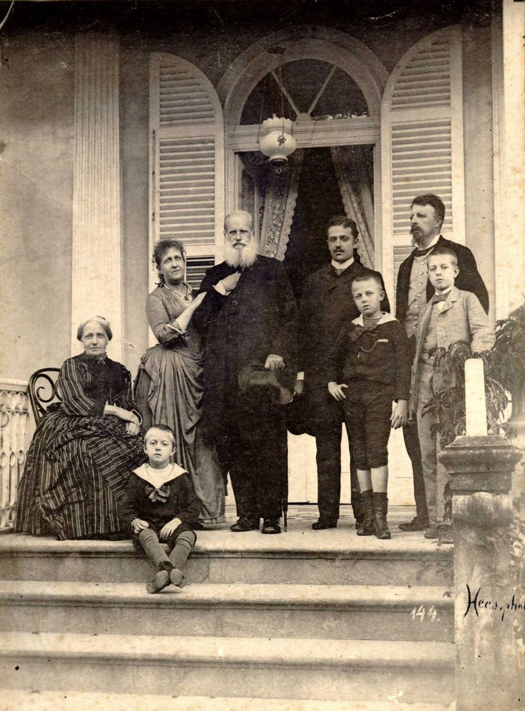
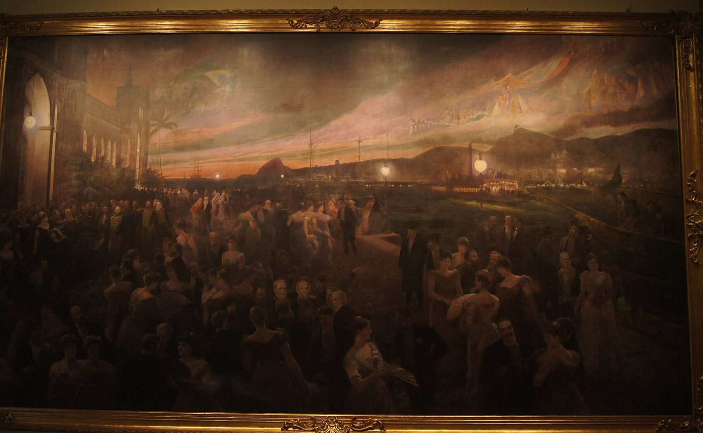
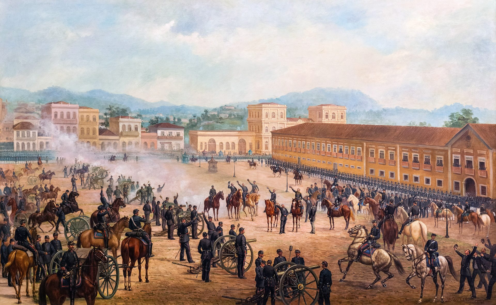

Trabalho de História · Professora Rita
A crise do Segundo Reinado
- Estabilidade
- Tensões
- Crises
- Rupturas
- Isolamento
- República
Davi Matheus · Juan Bento · Lucas Godoy · Kaique · Pedro Lucas
01 O Segundo Reinado · 1840–1889
Estável por fora, frágil por dentro
Por foraa política
- 1Poder ModeradorO imperador nomeava ministros e senadores e dissolvia a Câmara [2]
- 2Dois partidos se revezavamLiberais e conservadores, escolhidos pelo imperador
- 3Território unidoAs revoltas provinciais terminam por volta de 1850
Por dentroa sociedade
Ao fundo: o Império do Brasil · base cartográfica Natural Earth [17]
02 A Questão Religiosa · 1872–1875
A Igreja contra o governo imperial
- PadroadoO imperador indicava os bispos e o Estado pagava o clero [2]
- BeneplácitoOrdens do papa só valiam no Brasil com a aprovação do imperador
- UltramontanismoO papa Pio IX reforça a autoridade de Roma (Syllabus, 1864)
No Rio, o bispo suspende um padre que discursou numa loja maçônica
D. Vital e D. Macedo Costa punem irmandades com maçons e não obedecem ao governo
Presos e condenados a 4 anos de prisão com trabalhos forçados
Anistia dada pelo gabinete do duque de Caxias [11]
03 A Questão Militar · 1883–1887
O Exército começa a desafiar o Império
- Prestígio após a Guerra do Paraguai (1864–1870) [10]
- Soldos baixos
- Promoções lentas
- Proibidos de opinar na imprensa
Sena Madureira critica uma reforma do governo e homenageia um jangadeiro abolicionista: é punido
Caso Cunha Matos; Deodoro defende os oficiais punidos e é afastado do comando [8]
Nasce o Clube Militar, presidido por Deodoro, que pede que o Exército não capture escravizados fugidos [9]
Na Escola Militar, Benjamin Constant ensina o positivismo, “ordem e progresso”, e aproxima jovens oficiais da República [5]
04 O processo abolicionista · 1850–1888
O caminho até o fim da escravidão
Lei Eusébio de Queirós
Lei nº 581
Proíbe o tráfico de africanos escravizados, sob pressão britânica
Limite: a escravidão continua e cresce o tráfico interno
Lei do Ventre Livre
Lei nº 2.040
Filhos de mulheres escravizadas nascidos a partir da lei seriam livres
Limite: podiam servir ao senhor até os 21 anos
Lei dos Sexagenários
Lei nº 3.270
Liberta os escravizados com 60 anos ou mais
Limite: mais 3 anos de trabalho; poucos chegavam a essa idade
Lei Áurea
Lei nº 3.353
Extingue a escravidão, sem indenização aos proprietários [3]
Limite: nada previsto para integrar os libertos
05 A Lei Áurea e a ruptura · 1888
13 de maio de 1888
O fim da escravidão e a ruptura com os cafeicultores
“É declarada extincta desde a data desta lei a escravidão no Brazil.”
Lei nº 3.353, art. 1º · grafia original [3]
O que a lei fez
- Libertou cerca de 700 mil pessoas
- Assinada pela princesa Isabel, regente
- Sem indenização, e sem terra ou escola para os libertos [14]
A ruptura com os cafeicultores
- Vale do Paraíba: fazendeiros endividados se sentem traídos
- Oeste Paulista: já usava imigrantes; muitos eram republicanos
- Surgem os “republicanos de última hora” [9]
06 O crescimento do republicanismo · 1870–1889
A República ganha força
“Somos da América e queremos ser americanos.”
Manifesto Republicano, 1870 [15]
Manifesto Republicano, no Rio de Janeiro
Convenção de Itu funda o Partido Republicano Paulista
Clubes, jornais e comícios se multiplicam
O que defendiam
- Federalismo: autonomia das províncias
- Fim do Poder Moderador e do Senado vitalício
- Chefe de Estado eleito
Quem apoiava
- Cafeicultores do Oeste Paulista
- Jornalistas, advogados, professores
- Militares positivistas
- Ex-escravistas, depois de 1888

07 O isolamento político da monarquia · 1889
O trono perde suas colunas
Igreja
Afastada pela Questão Religiosa
Ruptura · 1874Exército
Insatisfeito e atraído pela República
Ruptura · 1887Elites agrárias
Escravistas rompem após a abolição
Ruptura · 1888Três grupos sustentavam o trono. Cada clique mostra uma ruptura.

08 A articulação militar e a crise final · 1889
Os últimos dias do Império
- Gabinete Ouro Preto
O último governo do Império promete reformas, como descentralização e Senado temporário, para conter os republicanos [14]
- Baile e Clube Militar
Enquanto a Corte dança na Ilha Fiscal, oficiais se reúnem no Clube Militar sob a presidência de Benjamin Constant [8]
- Civis e militares juntos
Benjamin Constant e republicanos como Rui Barbosa, Quintino Bocaiúva e Aristides Lobo procuram Deodoro [14]
- O boato
Espalha-se, pelo major Sólon Ribeiro, que o governo mandaria prender Deodoro e Benjamin Constant [4]

09 15 de novembro de 1889
A Proclamação da República
Um movimento militar, apoiado por republicanos civis
Tropas de São Cristóvão, articuladas por oficiais republicanos e Benjamin Constant, marcham ao Campo de Santana
Deodoro assume o comando e entra no Quartel-General: o gabinete do visconde de Ouro Preto é deposto [4]
Na Câmara Municipal do Rio, José do Patrocínio e outros vereadores declaram a República
Forma-se o Governo Provisório, chefiado por Deodoro; o Decreto nº 1 adota a República Federativa [8]
10 Conclusão
Por que a monarquia caiu?
- 1A Igreja se afastaQuestão Religiosa · 1872–1875
- 2O Exército desafia o governoQuestão Militar · 1883–1887
- 3A escravidão acabaLei Áurea · 1888
- 4Os cafeicultores rompem1888–1889
- 5Os republicanos crescem1870–1889
- 6O trono fica isolado1889
1889A monarquia brasileira não caiu por uma única crise, mas pela perda progressiva do apoio dos grupos que sustentavam seu poder.
Fontes Referências bibliográficas e documentos
Referências
- ALONSO, Angela. Flores, votos e balas: o movimento abolicionista brasileiro (1868-88). São Paulo: Companhia das Letras, 2015.
- BRASIL. Constituição Política do Império do Brasil, de 25 de março de 1824 (arts. 5º, 98, 101 e 102).
- BRASIL. Lei nº 3.353, de 13 de maio de 1888 (Lei Áurea). Declara extinta a escravidão no Brasil.
- CARVALHO, José Murilo de. Os bestializados: o Rio de Janeiro e a República que não foi. São Paulo: Companhia das Letras, 1987.
- CARVALHO, José Murilo de. A formação das almas: o imaginário da República no Brasil. São Paulo: Companhia das Letras, 1990.
- CARVALHO, José Murilo de. Cidadania no Brasil: o longo caminho. Rio de Janeiro: Civilização Brasileira, 2001.
- CARVALHO, José Murilo de. D. Pedro II: ser ou não ser. São Paulo: Companhia das Letras, 2007.
- CASTRO, Celso. Os militares e a República: um estudo sobre cultura e ação política. Rio de Janeiro: Jorge Zahar, 1995.
- COSTA, Emília Viotti da. Da Monarquia à República: momentos decisivos. 7. ed. São Paulo: Editora Unesp, 1999.
- DORATIOTO, Francisco. Maldita guerra: nova história da Guerra do Paraguai. São Paulo: Companhia das Letras, 2002.
- FAUSTO, Boris. História do Brasil. São Paulo: Edusp, 1994.
- IBGE. Recenseamento Geral do Império de 1872. População: 9.930.478 habitantes, dos quais 1.510.806 escravizados.
- SCHWARCZ, Lilia Moritz. As barbas do imperador: D. Pedro II, um monarca nos trópicos. São Paulo: Companhia das Letras, 1998.
- SCHWARCZ, Lilia Moritz; STARLING, Heloisa Murgel. Brasil: uma biografia. São Paulo: Companhia das Letras, 2015.
- MANIFESTO REPUBLICANO. A República, Rio de Janeiro, n. 1, 3 dez. 1870.
- LOBO, Aristides. Carta publicada no Diário Popular, São Paulo, 18 nov. 1889. Citada em CARVALHO, Os bestializados (1987).
- NATURAL EARTH. Admin 0 – Countries. Dados cartográficos em domínio público, usados no mapa ao fundo.